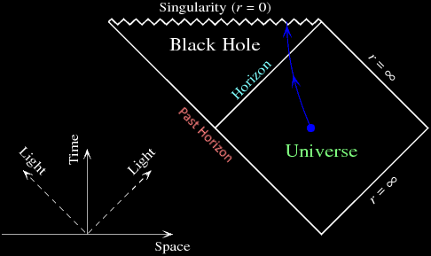

Research
I am broadly interested in the interplay between general relativistic effects and quantum effects, with an emphasis on how they play out in our current astrophysical Universe. The most straightforward and robust way to attack this problem is with a bottom-up approach: take what we already know and observe to be true about general relativity and the standard model, then zoom out to probe higher and higher energy scales until reaching whatever we might care about studying. For example, studying quantum field theory over a classical background spacetime to one-loop order is a perfectly valid theory of quantum gravity as long as we remain below the Planck energy scale around 1019 GeV (already far above what we can probe experimentally and observationally).
Credit: Andrew Hamilton, JILA
As a theoretical testbed for quantum gravity, I am currently focusing on a special place inside of black holes called the Cauchy horizon (labeled "inner horizon" to the right). Traveling beyond this horizon opens up an exotic world of transverable wormholes, naked singularities, and closed timelike curves, but all these features seem to rely on the black hole being complete empty, devoid of all matter and radiation. Astrophysically realistic black holes are far from empty, and the generic outcome that I am working to understand better is the so-called mass inflation singularity (more details below), a chaotic instability that likely prevents anything beyond the Cauchy horizon from ever forming.

Credit: Steven Burrows/Hamilton Group, JILA
I also study perhaps the most famous quantum effect related to black holes, Hawking radiation (more details below). While the amount of radiation escaping from an evaporating black hole and reaching Earth is absolutely tiny, particle production can in principle be detected anywhere in a curved spacetime. I am interested in understanding what the perception of Hawking radiation would be for someone falling into a black hole. Do things behave normally at the event horizon? What about farther in? Will space still appear mostly empty, or will you be enshrouded in a roiling quantum atmosphere?
To learn more about specific topics, check out the expositions below.
How would you draw the structure of a black hole? One simple way is to make a plot in 3D space [1]:
But this picture is far from perfect and can even be misleading. In general relativity, we treat space and time as a single 4-dimensional object, and this 3D picture not only fails to explain how time and space are swapped inside a black hole, but also, two observers can be in completely separate causal regions inside the black hole even though they're at the same point in the above diagram.
How can we do better? Usually, when physicists and mathematicians picture the anatomy of a black hole, they think of a Penrose diagram [2]:
Penrose diagrams plot time on the y-axis and radial distance on the x-axis (usually there's enough symmetry that we don't need to keep track of the other 2 dimensions). They're specially constructed so that:
- Light rays aimed at the center of the black hole are always plotted as straight lines 45° from the vertical.
- The entire infinite space is compressed down to a finite area.
If you care about the mathematical jargon, these properties mean that a Penrose diagram is a finite conformal spacetime diagram with geometrized unit scaling. But in simpler terms, it turns out we are already well-acquainted with many of these ideas—performing a metric transformation on a 2D manifold is exactly what happens when you make a map of Earth.
If you click and drag the above image, you'll see the full 3D view of Earth. But often, we aren't able to show things in 3D, and technically, the above image is already only a 2D projection (called the "orthographic projection"). Here we're only able to see one hemisphere at a time, so it might be nice to find a better projection where we can see all corners of the globe at once.
One straightforward way to do this is known as the "stereographic projection." The idea is that you start at the south pole (or any other point, if you click and drag the image below) and draw a line connecting that point to a 2D plane sitting right on top of the globe. That line will always intersect Earth's surface at exactly one point, so you can draw the corresponding point on your plane to make a map. The north pole will be at the center, the equator will be a circle around the center, the northern hemisphere will be inside that circle, and the southern hemisphere will be outside that circle:
Globe coordinates (lat., long.)
→ polar coordinates (r, θ)
θ = long.
This projection is really nice because, just like a Penrose diagram, the stereographic projection is a conformal map. This means that it faithfully represents angles everywhere— distances become more stretched as you go farther out from the center so that a four-way right-angle road intersection anywhere in the world will always appear with right angles on the map. And as an added bonus, geodesics passing through the center on this map always appear as straight lines (geodesics are the paths made when you set out in some direction and don't turn).
There's one big problem with the stereographic projection, though—you need an infinite amount of space to show the whole globe! To fix this, we can switch to a set of coordinates that squash the infinite parts back to a finite size. There are many mathematical functions that can convert an infinite input into a finite range, like the arctangent or hyperbolic tangent functions shown to the right.
If you apply the arctangent function to the radius of the stereographic projection above, you'll end up with the azimuthal equidistant projection:
Globe coordinates (lat., long.)
→ polar coordinates (r, θ)
θ = long.
Just like the stereographic projection, this azimuthal equidistant projection is conformal, and geodesics passing through the center appear as straight lines. But now, instead of needing an infinite amount of space, everything fits nicely on a disk, with the south pole (or any other point, if you click and drag the above image) spread out as a circle along the edge of the disk. As a side note, this is the projection used for the flag of the United Nations.
Okay, but what does this have to do with Penrose diagrams?
Everything! Penrose diagrams are just finite conformal projections of space-time instead of the finite conformal projections of space-space we had for Earth's surface. Because we're now including time, we'll no longer get the spherical topology we had for a globe (i.e., time won't loop back on itself). But we still can start with an infinite projection:
ds2 = dt2 + dx2 + dy2 + dz2
Cartesian coordinates (x, t)
(I coded all the spacetime diagrams here and below in JavaScript; feel free to reach out for more details.) One thing that's been added to the plot above is a pair of light rays: if someone is sitting at the position x=4 grid units and they shoot pulses of light in front of them and behind them (in the positive and negative x-directions) at time t=0, the yellow squiggly lines are what those two light pulses would look like. The speed of the light pulses is Δx/Δt, the inverse of their slopes.
Just as in the maps of Earth above, you can click and drag this plot to perform a coordinate translation, which, by the symmetry of the spacetime, leaves the metric unchanged. But this spacetime also has an additional symmetry, a rotation, which you can utilize by right-clicking and dragging.
With Euclidean coordinates, rotations make perfect sense for space-space diagrams, but with this space-time diagram, the rotation symmetry doesn't make much physical sense. We obviously can't just rotate our frame of reference to swap distance with time, since if we could, then we could get light to freeze or even go backwards in time!
People have known for quite a while that space and time don't rotate into each other in the normal Euclidean way. What many supposed was the equivalent transformation that keeps the spacetime origin and grid areas fixed is the Galilean boost. Changing from x into the radial coordinate r (which is only positive), you can perform a Galilean boost by right-clicking and dragging on this diagram:
Cartesian coordinates (x, t)
→ Cartesian coordinates (x', t')
t' = t
Since we're now working in polar coordinates, a radial translation is no longer a symmetry, so we can only translate in the time direction. But by right-clicking, we can also see what the spacetime would look like from the perspective of someone traveling at a speed v (written above as a fraction of the speed of light c).
But there's a crucial problem: we can boost to a speed faster than the speed of light. Even worse, the slope of the squiggly lines (and therefore the speed of light itself) will change whenever a boost is performed, even though numerous experiments have confirmed that the speed of light has the same constant value in every frame of reference. How do we fix this? It turns out there is still a way to rotate space into time while leaving the speed of light constant: with a hyperbolic rotation. Instead of tracing out a circular path (keeping the vector norm r2+t2 constant), the rotation must trace out a hyperbola (keeping r2-t2 constant), a transformation called the Lorentz boost:
ds2 = –dt2 + dx2 + dy2 + dz2
Lorentz transformation:
Cartesian coordinates (x, t)
→ Cartesian coordinates (x', t')
Now radial light rays will always be at 45° from the vertical no matter what frame you boost to by right-clicking and dragging—instead of traveling faster or slower, the light waves simply become stretched (or squeezed) in a process called "redshifting" (or "blueshifting").
The above spacetime diagram is an infinite representation of the Minkowski spacetime, which is often just called "flat spacetime." But to make a Penrose diagram, we still need to project it to a finite size, just as we did for the maps of Earth. There are many choices for which conformal projection to use; here's one that uses the hyperbolic tangent function tanh:
ds2 = –dt2 + dr2 + r2(dθ2 + sin2θ dφ2)
Polar coordinates (r, t)
→ Penrose coordinates (R, T)
This is the Penrose diagram for an infinite, empty universe, with our familiar light pulses traveling in opposite radial directions from someone at time T=0 and radius R=4 grid units from the coordinate system's center. This is the realm of special relativity. As before, Lorentz-boosting to a different velocity v by right-clicking and dragging will distort the grid, but it will always keep light rays at a constant speed with unit slope.
The infinite future in the above diagram is all squished into a single point at the top of the diagram (called "future timelike infinity" or i+), the infinite past is squished into the point at the bottom (called "past timelike infinity" or i–), and everything infinitely far away in distance from the center is squished into the rightmost point (called "spacelike infinity" or i0). And outward-traveling light rays actually don't reach any of these points—instead, they reach the lightlike, or null, surface on the upper right (called "future null infinity" or ℐ + for "scri-plus").
What if we add a black hole to our universe? The simplest model we can come up with is a spherically symmetric black hole, first discovered by Karl Schwarzschild [3] while serving for the German military in Russia during World War I, just months after Einstein published his general theory of relativity. Schwarzschild's universe is still completely devoid of matter (except for the singularity at r=0, which isn't technically part of the spacetime), but instead of a flat spacetime, it is curved, with stronger and stronger gravitational forces the closer you get to the center. Here's the Penrose diagram:
ds2 = –Δ(r) dt2 + Δ-1(r) dr2 + r2(dθ2 + sin2θ dφ2)
Δ(r) = 1 – rs/r
Polar coordinates (r, t)
→ Kruskal coordinates (rK, tK)
→ Penrose coordinates (R, T)
rK ± tK = e(r* ± t) / (2rs) sgn(r ± rs)
R ± T = atan(rK ± tK)
You may notice that while you can still left-click and drag to translate forward or backward in time, you can no longer right-click and drag. The reason for this is that Lorentz transformations are no longer a symmetry for curved spacetimes in general. Of course, in reality you are always free to speed up and boost to a different frame, but if you did so in the Schwarzschild spacetime, the new metric you would see would no longer be Schwarzschild.
The main new feature in the above Penrose diagram is the event horizon, the diagonal line spanning between the "r=rs" and "t→∞" labels. If someone crosses to the left of this line (so that their radius r is less than the Schwarzschild radius rs), they will inevitably hit the r=0 surface along the top of the diagram, which happens to be a curvature singularity. Unlike all the previous models, once something here reaches r=0, it won't just pass through the origin and keep going back out to infinity—everything below the Schwarzschild radius would have to travel faster than light (with a slope less than 1 on the Penrose diagram) to escape and return to the exterior part of the universe where t→∞.
The Schwarzschild spacetime may seem crude, as it is the simplest possible model for a black hole and contains no matter nor asymmetries. As a final question to round out this section, what would a Penrose diagram look like for a more realistic black hole within our current Universe?
Kerr spacetime Penrose diagram (credit: Andrew Hamilton, JILA)
First, there's one aspect of astrophysical black holes that you might expect would change the Penrose diagram significantly but most likely is not too relevant: rotation. Everything in the Universe has at least some angular momentum, and the simplest model for rotating black holes, the Kerr spacetime [4], has a completely different structure inside the event horizon, as shown to the right. Instead of a spacelike (horizontal on a Penrose diagram) singularity at r=0, there is a timelike (vertical on a Penrose diagram) singularity at r=0, hidden behind a second horizon below the event horizon (the "Cauchy horizon") split into two causally separated regions.
The innermost regions to the right are called "wormholes" because one could imagine extending the Kerr model to negative radii, allowing a new universe to be attached to the other side of the black hole. However, if we're going for realism, these wormholes and all the inner Kerr structure should never get a chance to form, because of the mass inflation instability described in the next section. The vacuum Kerr model was a red herring—when both rotation and non-vacuum accretion are included self-consistently in black hole models, the Cauchy horizon vanishes and the central singularity likely becomes spacelike, just as in the Schwarzschild Penrose diagram.
What, then, are the modifications that need to be made for our Penrose diagram to be more realistic? The first is to make the black hole non-eternal, since Schwarzschild black holes exist for all time, while realistic black holes were formed from collapsing stars a finite time in the past.
The first model that showed black holes can form from the gravitational collapse of a star was developed by the father of the atomic bomb, J. R. Oppenheimer, along with his PhD student Hartland Snyder [5]. Before World War II, Oppenheimer was interested in how nuclear matter collapsed naturally on astronomical scales (in fact, this final astrophysical paper of Oppenheimer's was published the day Hitler invaded Poland). For neutron stars exceeding some critical mass, there seemed to be nothing preventing gravity from crushing them to infinite density. Thus, they considered a spacetime with a uniform ball of collapsing, pressureless matter (what we now call a matter-dominated FLRW spacetime). Everything outside this ball is empty and ends up being the same as the Schwarschild spacetime, but by matching this solution with the collapsing solution at the boundary of the star's surface, we can arrive at the following Penrose diagram:
Exterior: Schwarzschild geometry (see above)
Interior: ds2 = a2(η) (–dη2 + dρ2 + ρ2dΩ2)
a(η) = r/ρ = η2/2
Conformal coordinates (ρ, η)
→ Kruskal coordinates (rK, tK)
→ Penrose coordinates (R, T)
f±(ρb x) = 4 ln|(3∓x)/2| - 5/3 ± (x3/6 + 3x/2 - 2)
R ± T = atan(rK ± tK)
The gridlines within the collapsing star appear distorted because they are constructed so that light rays still have a slope of +1 or –1. These gridlines are plotted for constant circumferential radii r and for constant conformal times η. The bulk of the math required to make such a diagram goes into matching the interior and exterior portions of the spacetime in order to find the functions f±, which transform between interior light rays with constant η ± ρ and exterior light rays with constant r* ± t.
If you click and drag on the above diagram to change the origin of the time axis, you'll notice that it changes shape. When the diagram is centered far enough into the past (so that the red curve, which gives collapsing star's surface, appears way off into the future), the diagram looks similar to that of flat Minkowski spacetime. Light rays can pass through the center at r=0 and head outward to escape the collapsing star. But when the diagram is centered far enough into the future (so that the collapsing star appears in the far past), the diagram looks like that of a Schwarzschild spacetime, with the Schwarzschild past horizon at r=rs (also called the "illusory horizon" or the "white hole horizon") replaced with the dimming, redshifting surface of the star that collapsed long ago.
The Oppenheimer-Snyder model covers what happens in a black hole's past. But what about its future?
If we only consider the laws of general relativity, a black hole will last forever. If will continually grow bigger over time from accreted matter and radiation, as dictated by the second law of black hole thermodynamics. But if we take quantum mechanics into account, then eventually, hundreds of billions of years in the future, black holes will evaporate.
A fully self-consistent model of black hole formation and evaporation would require a full theory of quantum gravity. But several ad hoc models exist that piece together solutions or add in Hawking radiation by hand. For example, if a black hole is formed from a single collapsing shell of radiation and later evaporates from a single burst of Hawking radiation (with both a positive-energy outgoing shell and a negative-energy ingoing shell), the Penrose diagram could look like one of the following:
For these diagrams, the r=0 surface along the left side is chosen to be completely vertical, unlike the above Oppenheimer-Snyder diagram with the curved leftmost surface. The result is that the part of the r=0 surface where there is a singularity (present only in the left diagram above) is not horizontal and instead bends downward. But regardless of how the diagram is chosen to be shaped, the result is that when the black hole evaporates, the regular r=0 center returns and the spacetime continues to infinity just as in Minkowski. And as a side comment, the diagram on the right is a particular toy model known as the Hayward spacetime, in which the black hole's singularity is replaced with some distribution of matter whose origin and cause is unkown.
One final way in which we might make our Penrose diagram for a black hole more realistic is by adding a cosmological constant. We have so far assumed that the spacetime is asymptotically flat, but in our own Universe, spacetime is expanding, at a rate governed by the cosmological constant Λ. If you go far enough away from the black hole, instead of seeing a flat geometry, you will find a cosmological horizon, where the geometry is growing so fast that if you cross over, you will never be able to send light signals back to the black hole.
The simplest spacetime modeling a black hole with a cosmological constant was first found by the Jewish Austrian physicist Kottler in 1918, and it is now either named after him or is called the Schwarzschild-de Sitter black hole (or Schwarzschild-anti-de Sitter, if the cosmological constant is negative). The horizon function Δ(r) for this spacetime has 3 roots (for Schwarzschild it just has one, at r = rs): one at the event horizon (r = rE), one at the cosmological horizon (r = rC), which is only real and positive when Λ>0, and a third that is always imaginary or negative. Here's what the Penrose diagram looks like:
ds2 = –Δ(r) dt2 + Δ-1(r) dr2 + r2(dθ2 + sin2θ dφ2)
Δ(r) = 1 – 2M/r – Λr2/3
Polar coordinates (r, t)
→ Kruskal coordinates (rK, tK)
→ Penrose coordinates (R, T)
rK ± tK = e(r* ± t) Δ'(rE)/2 sgn(r ± rE)
R ± T = atan(rK ± tK)
Move the slider under this diagram to change the value of the cosmological constant from Λ = 0 (the standard Schwarzschild spacetime) to either a positive or negative value. When Λ is negative, spatial infinity is timelike and can be touched by both light rays and massive particles, since spacetime is contracting and bunching up asymptotically far away. Though not shown, Λ technically can take on values all the way to negative infinity, when the event horizon will converge to zero radius.
When Λ is positive, a new causal piece of the spacetime appears, hidden behind a cosmological horizon, leading to a singularity at r→∞. Though not shown, there is a maximum value of the cosmological constant, Λ = 1/9 c4/(GM)2, where the event horizon and the cosmological horizon merge at r = 3 GM/c2 and the causal structure of the spacetime changes. Additionally, the Kottler spacetime is usually depicted in its maximal analytic extension, with additional wedges below the past event horizon and the past cosmological horizon containing copies of r = 0 and r→∞, and with an additional parallel universe connected to both the left and right sides of the diagram. While such an extension makes use of all the symmetries the de Sitter spacetime has to offer, it includes both an expanding geometry out of a black hole and a contracting geometry into a white hole, so it is likely not realized by astrophysically relevant collapsing stars.
Our current Universe it sitting infinitesimally close to Λ=0 in the above diagram; to be exact, we measure the cosmological constant to be Λ = 2.4×10-46 c4/(GM☉)2. Nonetheless, the cosmological horizon is not zero, and this diagram can model either an astrophysical black hole within the eternal inflation in our Universe's future, or a primordial black hole in the early stages of inflation at the beginning of the Universe. But it should be noted that a full cosmological model of our Universe is much more complex—our spacetime is not only expanding, but that expansion is accelerating, and further, the dynamic geometry completely changes based on whether radiation, matter, or dark energy dominates the evolution. However, as we hopefully have seen throughout this section, for all practical purposes, we can go a long way with just the simplest of models to describe black hole spacetimes.
The goal of this section is to explain what goes wrong when you try to model the inside of a black hole as a wormhole to another universe. The specific problem, known as "mass inflation," will actually be seen to apply to a much broader class of black holes, especially those with a special surface called the Cauchy horizon.
The intuition
Credit: Andrew Hamilton, JILA
Imagine a black hole as a whirlpool, where currents of water representing the inflow of space drag you inward. The faster the water moves, the stronger the pull of gravity, and the harder it will be to back-paddle and escape.
There's a critical point called the "event horizon" (labeled "outer horizon" in the diagram to the right) where the inflow of space reaches the speed of light c. Within this horizon, the water currents are faster than c, and since c is the maximum velocity you could ever travel, you have no hope of escaping from within. But in many black hole models, there is a second horizon farther inward, within which the inflow of space once again slows down below c, so that when you're close enough to the core, you can move around in whatever direction you please. Physically, this means there's some force fighting against gravity to "push" space back outwards, whether it's an electric charge (Reissner-Nordström black holes), a rotational centrifugal force (Kerr black holes), or some hypothetical form of quantum matter or dark energy.
So far, so good. Where do things go wrong?
Now imagine adding some matter or radiation to our black hole. The matter could be pieces of debris floating on the water like sticks or leaves, and the radiation could be represented by water striders or wind-up toy boats that always travel in a single direction at the speed c. If they're directed inward, they'll simply travel straight to the singularity at the center. But what if they miss the singularity and start to head outward, or if they are released in the outward direction while they're between the outer and inner horizons (like the radiation escaping a star as it collapses to form a black hole)?
If you think about it, any outward-directed radiation will end up accumulating along the inner horizon, where it will hang indefinitely. This is a problem. Much like a dam, eventually there will be enough buildup that the water will be forced to change course. This is the mass inflation instability—perturbations to an otherwise empty black hole will build up at the inner horizon, eventually causing the geometry to back-react and form a new singularity.
The blueshift singularity
A year or two after the physicist Roger Penrose published his singularity theorem that eventually earned him a Nobel Prize, he became the first to point out that a black hole's inner horizon can be a surface of infinite blueshift. To explain what this means, let's see what it would actually look like if you fall into an empty black hole and approach the inner horizon:

The above animation shows the view from inside a Reissner-Nordström black hole with a charge-to-mass ratio of 4/5. At first, you see the black hole's shadow shrinking below you and the sky from the rest of the universe above you growing (after all, you're traveling outward, even if your radial position r is decreasing). But once you reach the inner horizon, the sky above you shrinks to a single, bright, white-blue point.
You've just witnessed the end of the universe. As you can see from a Penrose diagram, even though it only takes you a finite amount of time to reach the inner horizon, you're able to see all the light from the entire infinite future of the universe you came from, reaching you all at once. And even worse, this light will appear to you blueshifted by an infinite amount.
The inner horizon above is also a "Cauchy horizon," which means that it marks the boundary of predictability—since you've reached the end of the universe you came from, there's no way to predict what will happen next, since general relativity has no way of dealing with the timelike singularity that will suddenly appear where the sky above used to be.
As it turns out, if your only worry was the Penrose blueshift singularity at the Cauchy horizon, you might actually get by alright. The bright flash happens pretty quickly, and in a realistic universe, all the radiation should vanish by the time t goes to infinity, so that you won't actually see an infinite amount of energy at the Cauchy horizon, even if it does get exponentially large. But, as we'll see in the final section, there's one more key ingredient to mass inflation that guarantees that the spacetime geometry will back-react catastrophically and your journey will be over.
The back-reaction
The final ingredient needed for mass inflation, in addition to the ingoing radiation that blueshifts exponentially, is a small amount of outgoing radiation from inside the black hole that shifts the position of the inner horizon.
To model the effects of perturbations on a black hole's inner horizon, let's follow the first fully nonlinear analysis of mass inflation, done by PhD student Eric Poisson and his adviser Werner Israel in 1990 at the University of Alberta, Canada [7]. As a reminder, the goal is to see how a black hole responds to perturbations from matter or radiation—the black hole is perfectly fine if spacetime is completely empty, but introducing extra stuff causes the Cauchy horizon to become unstable.
To model perturbations, we can start with a single ingoing null shell of radiation that falls into the black hole, as depicted in the Penrose diagram to the right. To the past of this shell (the black regions), the geometry is given by the standard empty black hole spacetime, and to the future of this shell (the yellow regions), the geometry is also empty, but the black hole has slightly more mass. As a result, the horizons shift their positions: the outer horizon expands and the inner horizon shrinks (you can check that this is true by increasing M in the formula for the horizons r± of a Kerr-Newman black hole). As a result, the apparent outer horizon (where space locally starts inflowing faster than the speed of light) of the original black hole becomes separated from the event horizon (where outgoing light rays globally reach future timelike infinity).
However, this ingoing shell isn't enough. Even though ingoing light rays in the yellow portion of the spacetime become infinitely blueshifted at the Cauchy horizon, this Cauchy horizon is also a surface of infinite redshift for observers in the new universe to the future of the wormhole. In this case, the blueshift and redshift end up canceling each other out exactly, so that no mass inflation occurs.
Realistic black holes also have outgoing radiation, both from the light emitted outwards from the surface of the collapsing star, and from ingoing radiation that is back-scattered inside the black hole by the gravitational potential. As a result, the Penrose diagram will look like the one on the left. Now we can see that not only does the apparent outer horizon separate from the event horizon, but also, in the orange region, the apparent inner horizon (where space locally starts inflowing slower than the speed of light) separates from the Cauchy horizon (the global surface traced by light rays originating from future infinity). What this means is that the surface of infinite blueshift no longer coincides with the surface of infinite redshift from the future new universe, so a singularity can form at the Cauchy horizon.
Poisson and Israel's arguments actually didn't need to rely on the existence of a future new universe (which we wouldn't expect to form anyway from a collapsing star). Instead, they matched the metrics at the point where the ingoing and outgoing shells cross, deriving and generalizing an elegantly simple equation called the DTR relation: $$\Delta_\text{red}(r)\ \Delta_\text{yellow}(r)=\Delta_\text{black}(r)\ \Delta_\text{orange}(r),$$ where the function Δ(r) in the line element ds2 = –Δ(r) dt2 + Δ-1(r) dr2 + r2 dΩ2 is often called the "horizon function" because it goes to zero at the locations of the outer and inner horizons. If the crossing point of the two null shells is taken to the inner horizon of the original empty black hole, Δblack goes to zero. But since the product ΔredΔyellow remains finite and non-zero (since the crossing point hasn't reached the inner horizons of the spacetimes with the new masses), the DTR relation tells us the Δorange must blow up to infinity. This is the mass inflation phenomenon: the locally measured geometry as measured by the horizon function Δ(r) (and consequently, the locally measured internal mass parameter and tidal forces) becomes exponentially large after two shells cross each other near the inner horizon.
Of course, this model is a crude one, since realistic black holes aren't completely empty aside from single ingoing and outgoing shells of radiation. Poisson and Israel also considered a model where the yellow and red regions aren't empty but instead contain a continuous, decaying influx or outflux of radiation. If this radiation follows Price's law (corresponding to the back-scattered radiation from a completely isolated gravitational collapse), its energy density will drop off as some power law dm/dv ∼ v–p for the ingoing Eddington-Finkelstein coordinate v and some positive constant p. Under this assumption, though they could not obtain a full solution for the spacetime, they found that the locally measured mass parameter m at the crossing point will blow up at a rate proportional to $$m\sim v^{-p}\ \text{e}^{|\kappa_-|v},$$ where κ– is the apparent inner horizon's surface gravity (see the section on Hawking radiation for more details), and where v→∞ at the Cauchy horizon.
Since Poisson and Israel's 1990 paper, plenty of other more realistic models of perturbations have been found to give the same basic mass inflation mechanism. Amos Ori [8] gave the full solution for a continuous stream of ingoing radiation and a short pulse of outgoing radiation, Brady and Smith [9] gave a numerical solution for a scalar field of matter perturbing a black hole everywhere, and Hamilton and Avelino [10] gave the full solution for a self-similar two-fluid accretion onto a black hole.
What's the generic result of the mass inflation instability? That depends on what happens near the end of the Universe. If the perturbing radiation really decays as Price's law, most of the structure of the Penrose diagrams above will remain intact, but the Cauchy horizon will be replaced by a weak null curvature singularity, as depicted in the Christopher Nolan film Interstellar—the curvature will instantaneously diverge, but if you pass through it quickly enough, tidal deformations will be minimal. But if, on the other hand, the black hole is not completely isolated, and things continue to fall into the black hole after the initial collapse (like the continual, non-decaying radiation from nearby stars, or the CMB itself), the perturbations will be strong enough to destroy the Cauchy horizon and transform it into a strong spacelike singularity. Poisson and Israel even give an argument in their original paper that this will be the case once the curvature reaches the Planck scale and quantum effects are considered. In that case, no wormholes or new universes will ever form—your journey into a black hole will always end catastrophically at the central singularity.
Are black holes actually black? It turns out that if you take the effects of quantum mechanics into acount, the answer is no. In the 1970s the British physicist Stephen Hawking [11] derived the following formula for the temperature at which a black hole would glow: $$T_H=\frac{\hbar c\kappa}{2\pi k_B},\qquad\text{where}\quad\kappa=\frac{c^2}{4GM}.$$ The quantity κ, when multiplied by the speed of light squared c2, is the black hole's surface gravity. It has units of acceleration and is the generalization of Earth's surface gravity g = 9.8 m/s2, but for the event horizon of a black hole. (Technically, if you try to sit still at the event horizon, you'd need an infinite acceleration, so κ is actually defined as the acceleration redshifted to infinity; i.e., the gravity you would measure if you dangled something down to the event horizon on an ideal string from really far away.) The gravitational acceleration from κ is stronger the closer you get to the singularity, which means that, perhaps counterintuitively, smaller black holes have higher surface gravities at the event horizon and therefore higher Hawking temperatures. The more energy a black hole loses as it radiates, the hotter it becomes, not colder!
The above equation is remarkable because it includes so many fundamental constants that hint at physics from completely different fields of study:
- The Boltzmann constant kB tells us that thermodynamics is involved (kB converts between temperature and energy),
- the reduced Planck constant ħ tells us that quantum mechanics is involved (ħ converts between a particle's energy and a wave's frequency),
- the speed of light c tells us that Einstein's theory of relativity is involved (c2 converts between energy and mass),
- the Newtonian gravitational constant G tells us that the force of gravity is involved (G converts between mass and gravitational flux), and
- the Archimedes constant π tells us that geometry is involved (2π converts between rotational and linear quantities).
Before diving into where this formula comes from, let's plug in some numbers: one of the closest and hottest black holes we know of, Gaia BH1 (which is still very far away, at about 1,500 light years), has a mass of about 9.6 solar masses, which gives a surface gravity of κc2 ≈ 1.6×1012 m/s2 and a Hawking temperature of: $$T_H\approx\frac{(1.06\times10^{-34}\ \text{Js})(3\times10^8\ \text{m/s})^3}{2(3.14)(1.38\times10^{-23}\ \text{J/K})4(6.67\times10^{-11}\ \text{Nm}^2/\text{kg}^2)(9.6\times(2\times10^{30}\ \text{kg}))}\approx6.4\times10^{-9}\ \text{K}.$$ This number is abysmally tiny. Using the Stefan-Boltzmann law, this blackbody temperature would correspond to a luminosity of a mere 10-30 watts! For comparison, the cosmic microwave background has a temperature of about 2.7 K, which is almost a billion times hotter. What this means is that the current black holes in our Universe are actually accreting background radiation and growing rather than evaporating from their Hawking radiation.
Where does the Hawking formula come from? There are dozens of independent derivations of the Hawking temperature, and here we'll explore a few. To guide us, we'll use three different frameworks, based on how the physicist John Archibald Wheeler (who coined the term "black hole") divided up his life's work: (1) Everything is Particles, (2) Everything is Fields, and (3) Everything is Information. And before diving in, I've also included (0) a quick, simple derivation based on Heisenberg's uncertainty principle.
Click to expand each section below to learn more:
"In fact the smallest units of matter are not physical objects in the ordinary sense; they are forms, ideas which can be expressed unambiguously only in mathematical language."
–Werner Heisenberg
As a plausibility argument, consider one of the foundational principles of quantum mechanics, Heisenberg's uncertainty relation: $$\Delta x\Delta p\geq\frac{\hbar}{2},$$ which tells us that it's impossible to know both the position x and the momentum p of a quantum mechanical system perfectly—their uncertainties will always combine to be greater than half the reduced Planck constant. How does this apply to black holes?
First simulated black hole image, Jean-Piere Luminet, 1979
Near the event horizon of a black hole, there's an intrinsic uncertainty in where radiation might pop into existence from the quantum vacuum. This uncertainty has a characteristic length scale corresponding to the circumference of the event horizon: $$\Delta x\approx2\pi r_s=2\pi\frac{2GM}{c^2},$$ where rs is the Schwarzschild radius of the black hole's event horizon. Then, by saturating Heisenberg's uncertainty principle, the characteristic momentum of the radiation produced from this unresolved position will be: $$\Delta p\approx\frac{\hbar}{2\Delta x}=\frac{\hbar c^2}{8\pi GM}.$$ The final step is to convert this momentum into a temperature. The speed of light c converts from momentum to energy (E=pc for photons), and the Boltzmann constant kB converts from energy to temperature (E=kBT is the average energy in a thermodynamic harmonic oscillator), so in the end we have: $$\Delta T=\frac{\Delta pc}{k_B}\approx\frac{\hbar c^3}{8\pi k_BGM}.$$ This is precisely the Hawking temperature! On a simple level, Hawking radiation is nothing more than a quantum mechanical blip whose Compton wavelength is on the order of the size of a black hole.
"Not only does God play dice but... he sometimes throws them where they cannot be seen."
–Stephen Hawking
I've heard many people say that treating Hawking radiation in terms of particle-antiparticle pairs that pop in and out of existence isn't the "real" way of doing things and shouldn't be taken seriously. So let me put this to rest: while Hawking did use for his mathematical derivation a global field treatment (described in the next section below), he also speculated in the same paper about a local particle picture. Those speculations weren't rigorous and shouldn't be taken too literally, but many others since then have conducted serious studies of how Hawking radiation might originate from a local particle perspective, in an attempt to understand some of the biggest gaps in our understanding of the quantum nature of gravity. Let's go through the key details of one such set of pioneering studies.

In quantum mechanics, particles can "tunnel" through regions that are classically forbidden. Take, for example, a virtual particle-antiparticle pair that is spontaneously created from the vacuum just outside of the event horizon. In theory, these virtual pairs can pop up anywhere at any time, but they usually will quickly annihilate and disappear, and they'll only ever have the chance to become "real" if they manage to separate and tunnel into classically safe regions.
There's only one problem—for the virtual pair just outside of the event horizon to satisfy energy conservation, one of the particles has to have negative energy. This is a big no-no in the everyday world. But luckily, there is a place where negative-energy particles are free to roam: inside black holes (or more precisely, within their ergospheres).
The goal is thus to calculate the path a negative-energy particle would need to take to tunnel into the black hole. Equivalently, we could also calculate the path a positive-energy particle from a virtual pair inside the event horizon would need to take to tunnel outside, and in actuality both processes should be calculated together. Let's focus on the latter, positive-energy case.
The path of a particle can be analyzed by integrating over a quantity S called the action. In quantum mechanics, the path integral approach involves integrating along all possible paths a particle can take. But sometimes, a path's action gives an imaginary number instead of a real one, and these cases correspond precisely to the paths that are classically forbidden.
Our end goal is to calculate the probability of tunneling per unit time. This quantity Γ, called the transmission rate, is given by the WKB approximation in terms of the imaginary part of the action: $$\Gamma\sim\text{exp}\left(-\frac{2}{\hbar}\ \text{Im}\{S\}\right).$$ Instead of considering one of the paths sketched in the diagram to the left, we must consider a path that starts just below the event horizon, at r=rs–ϵ, and ends just above it, at r=rs+ϵ (for some tiny length ϵ and the Schwarzschild radius rs=2GM/c2).
The action along a path can be calculated as the integral of a particle's momentum p with respect to distance: $$S=\int_{r_s-\epsilon}^{r_s+\epsilon}p\ dr$$ The particle's momentum p near a black hole is well-known from general relativity: it equals its total energy E divided by its velocity dr/dtff in free-fall coordinates, which equals 1-√(rs/r) times the speed of light c (as long as the particle is radially outgoing). Thus, we need to calculate $$S=\frac{E}{c}\int_{r_s-\epsilon}^{r_s+\epsilon}\frac{dr}{1-\sqrt{\frac{r_s}{r}}}.$$ There are many ways of computing this integral; in the paper where this was originally derived, they used some clever tricks from complex analysis [13]. But let's not try anything too fancy. Performing a u-substitution with u=√(r/rs)-1 (or simply plugging the above integral into a computational engine like Mathematica or WolframAlpha, as physicists often do) gives $$S=\frac{E}{c}\left[r+2\sqrt{r_sr}+2r_s\text{log}\left(\sqrt{\frac{r}{r_s}}-1\right)\right]^{r_s+\epsilon}_{r_s-\epsilon}.$$ Remember that in the end, we need to compute Im{S}, the imaginary part of this action. Since the radius r is always real and positive, the first two terms in the square brackets above will never be imaginary, so we can ignore them. But the logarithmic term stands out: if we plug in the integration limits and assume that ϵ is small compared to the size of the event horizon (so that we can perform a Taylor series expansion), we'll be left with $$\text{Im}\{S\}=\frac{2r_sE}{c}\ \text{Im}\Big\{\text{log}\big(-1+\mathcal{O}(\epsilon)\big)\Big\}.$$ What's the logarithm of a negative number? It's certainly not real! We're actually dealing with complex-valued logarithms here, which have an extra term corresponding to the complex phase of the argument. The complex phase of -1, from Euler's identity, is π, which means that log(-1)=iπ. And now we can put everything together: $$\Gamma\sim\text{exp}\left(-\frac{2}{\hbar}\cdot\frac{2r_sE\pi}{c}\right)=\text{exp}\left(\frac{E}{k_BT_H}\right),$$ where you can verify that the TH above gives the same formula for the Hawking temperature as what we originally had. And we're done—you may recognize this final quantity from thermodynamics as a Boltzmann factor, which is a common tool for calculations of thermal distributions. So there you have it—the probability that a virtual particle will tunnel out of the event horizon and become real follows a thermal distribution at the Hawking temperature.
"I studied how quantum fields or particles would scatter off a black hole. I was expecting that part of an incident wave would be absorbed, and the remainder scattered. But to my great surprise I found there seemed to be emission from the black hole itself."
–Stephen Hawking
Imagine that all matter and radiation exist not as particles, but rather as waves, oscillating within a vast field that permeates the whole Universe. This concept, in the realm of quantum field theory, is the context in which Hawking originally derived his formula for the temperature of a black hole.
Hawking considered a model of spacetime with a black hole formed from gravitational collapse, like the Oppenheimer-Snyder model described above in the section on Penrose diagrams. But on top of this spacetime he added a quantum field. Different types of quantum fields can be constructed based on their spin quantum number—perhaps the most familiar is the massless, spin-1 field, the photon field, which contains oscillations we call electromagnetic waves. But there could also be a spin-1/2 field (for electrons or other fermionic matter), a spin-2 field (for gravitons and gravitational waves), a spin-3/2 field (for the supersymmetric gravitino), or a spin-0 field (for scalar bosons like the Higgs). All of them produce virtually the same effect, so let's take the simplest case, with zero spin and zero mass.
If you put a massless field over a flat (Minkowski) spacetime and create a spherical wave (also called an s-wave) infinitely far away, here's what it might look like as it evolves over time:

On the left is a Penrose diagram showing the path of the field excitation in yellow, and on the right is a set of 2D spatial slices at different times. Since the spacetime is flat, the field doesn't interact much with the geometry it's sitting in, so the wave you sent in will return without changing.
What if you try to scatter a wave in a field over a collapsing black hole spacetime? You'd have to send it in early enough so that it can escape instead of getting captured by the forming black hole, but here's the result:

Here we see the red shell of matter collapsing and eventually falling within its own event horizon (the white circle in the "Flamm's paraboloid" diagram on the right). The yellow wave from the field is able to escape just before the event horizon is reached, but it ends up paying a price—it loses energy and becomes redshifted.
This key concept that Hawking worked out is that scattering process through collapsing black hole spacetime causes the waves to redshift at an exponential rate. As the wave first approaches the collapsing matter, it will initially be blueshifted as it is pulled toward the matter's gravitational potential well. If the matter didn't collapse and instead remained static, the wave would exit and be equally redshifted as it climbs out of the potential well, such that the redshift and blueshift exactly cancel out and nothing special happens. But since the matter is collapsing, the wave exits from a smaller, denser volume than when it entered, so that the wave loses more energy and redshifts more in its escape than it originally gained in its approach.
Where did all the energy from the field go? In quantum field theory, such an exponential redshift is always made up for by a thermal emission of radiation. This is called "stimulated emission" if we send in a wave to initiate the process (like in the animation above, or like in lasers, where electromagnetic waves hit atoms in an energetic state and cause them to decay), or "spontaneous emission" if we start out in the vacuum state and allow the decay to happen naturally (like the black holes Hawking considered).
How does this work mathematically? We would like to calculate the number of particles N̂out seen by an observer far away in the future, starting out with a field initially in a vacuum state |0in⟩ in the past (with no particles initially; that is, N̂in|0in⟩ = 0). Here I'm using Dirac's bra-ket notation, so that the quantity to be calculated is written as ⟨0in|N̂out|0in⟩. To calculate this, we must perform a change of basis, so that the operator N̂out can be written in terms of the operator N̂in that acts trivially on our vacuum state |0in⟩. Such a change of basis is known as a Bogoliubov transformation. The number of particles in each wave mode can then be shown to equal the inner product of the field's in state waves |ϕin⟩ with the field's out state waves |ϕout⟩: $$\langle0_\text{in}|\hat{N}_\text{out}|0_\text{in}\rangle=\int_0^\infty d\omega\sum_{\ell=0}^\infty\sum_{m=-\ell}^{\ell}\left|\langle\phi_\text{in}|\bar{\phi}_\text{out}\rangle\right|^2,$$ where an overbar denotes the complex conjugate, and ω, ℓ, and m denote the quantum numbers (frequency, angular momentum, and azimuthal number, respectively) for the in state's field modes. The bra-ket inner product depends on the specific type of field we're dealing with, but it generally is equal to an integral over a slice of 3D space of the symmetrized product of one state with the other state's time derivative.
What are the two states |ϕin⟩ and |ϕout⟩ we need to put into this formula? The field's out state is given simply as a sinusoidal wave with a frequency ω, written here as a complex exponential: $$\phi_\text{out}=\frac{Y_{\ell m}(\theta,\varphi)}{\sqrt{4\pi\omega}\ r}\ \text{e}^{-i\frac{\omega}{c}(ct-r^*)},$$ with spherical harmonics Yℓm and the Schwarzschild tortoise coordinate r* as defined above in the Penrose diagrams section. This expression is simply the eigenmode solution of the field's wave equation, and the only important part to keep track of is the exponential term.
What about the field's in state? This is the state that evolves through the collapsing geometry and becomes exponentially redshifted by the time it reaches the place where the out state is initialized. In the process, part of the wave will be scattered back and absorbed by the black hole (leading to graybody factors), but for a wave with a high enough frequency, this part is negligible; all of the wave will be transmitted and redshifted by a characteristic amount.
The form of the redshifted waves that Hawking derived for the in state is $$\phi_\text{in}=\frac{Y_{\ell m}(\theta,\varphi)}{\sqrt{4\pi\omega}\ r}\ \text{e}^{-i\frac{\omega}{c\kappa}\ \text{e}^{(ct-r^*)\kappa}}.$$ These waves have been stretched and redshifted exponentially; instead of oscillating at a rate proportional to ct–r*, they now oscillate at a rate proportional to the exponential e(ct–r*)κ, which precisely equals the Kruskal coordinate combination ctK–rK mentioned in the section above on Penrose diagrams. And the rate κ at which the waves are redshifted is precisely the surface gravity that appears in the Hawking formula!
We now have all the pieces to calculate the number of Hawking particles, and the rest of the work is pure calculus. The integral of our function of the form e-iωu e-iω'eκu can be expressed in terms of Γ functions, and after some work, the final result is $$\langle0_\text{in}|\hat{N}_\text{out}|0_\text{in}\rangle=\frac{1}{\text{e}^{\frac{2\pi\omega}{c\kappa}}-1}.$$ Students of thermodynamics will immediately recognize this as the formula for a particle number distribution following Planck's law, the law for thermal blackbodies. The exponential term in Planck's law is usually written with a temperature T as exp(ℏω/kBT), and solving for this temperature using the above equation gives us exactly the Hawking formula: $$T=\frac{\hbar c\kappa}{2\pi k_B}.$$
There are of course many details that have been skipped over; for a more thorough treatment, feel free to reference some of the sources that were most helpful for me (this paper [14] and this textbook [15]) when first learning Hawking's derivation.
"The geometrization of quantum information in quantum gravity has been a fruitful and mysteriously successful research direction..."
–Netta Engelhardt
In the time since Hawking's original derivation, much of the research on Hawking radiation has shifted toward understanding the nature of quantum gravity from the perspective of quantum information theory. Perhaps our semiclassical field description of spacetime isn't quite right for quantum gravity, but what if a description in terms of qubits and entanglement entropy is more helpful?
The driving force in this sector of research was an apparent puzzle related to Hawking's semiclassical description, often called the black hole information paradox. In quantum mechanics, states always evolve unitarily, which means that given a state at some time, you can always work out what that state looks like at any point in the future or the past. But if a black hole emits purely thermal radiation (which contains no useful information) and continues to do so until it evaporates, then the final state will be nothing more than a bunch of thermal photons, with no way of being able to work backwards to determine what the star looked like before it collapsed into a black hole. Where did that information go?
This problem was put in more formal terms by Don Page [16], who considered the entanglement entropy of a quantum system, a measure of how mixed and disorded the information within two subsystems is. If a black hole steadily emits thermal radiation throughout its lifetime, its entanglement entropy will get larger and larger until it reaches a maximum, constant value once the black hole is completely gone, as shown by the dashed curve to the right. But if the laws of quantum mechanics are to be believed, then the entropy will look quite different. Though the entropy initially will increase as more and more entangled Hawking pairs are created, eventually, the black hole will become small enough that its event horizon can't fit any extra degrees of freedom from Hawking pairs. At this point, new Hawking pairs will be forced to entangle with radiation that has already been emitted in the past, so that the total entanglement entropy will decrease at a rate proportional to the horizon area. Eventually, the black hole will shrink to nothing, and all the radiation that remains will be left in a pure, zero-entropy state, just as the system was before the black hole formed.
Eventually, it became clear that Page's picture was the right one, and something needed to be changed about Hawking's semiclassical calculation. Of course, the semiclassical picture has many shortcomings: it neglects any back-reaction from the Hawking radiation on the spacetime, it only includes first-order effects from the quantum field, and it completely fails once a black hole's curvature approaches the Planck scale.
Around 2019, a tour de force by several research groups showed how the Page curve might be realized using a gravitational path integral approach. The calculations, beyond the scope of this exposition, made use of replica wormholes and relied on a conjecture from holography known as the Ryu-Takayanagi formula, which is usually applied to string theory on anti-de Sitter spacetime. The conclusion, as Page had predicted, is that a black hole's initially rising entropy can reach a maximum and start dropping as it evaporates, as a result of a new "island" forming inside the black hole that cuts off the interior radiation.
What further insights might we gain from thinking of Hawking radiation as quantum information? In 2022 a group of collaborators colloquially referred to as PHEVA (an acronym of their last names) [17] developed a model for Hawking radiation in terms of quantum informational circuits.
Fundamental description, adapted from [18]
The quantum circuit representing the "fundamental description" for black hole evaporation is shown on the left. Each line represents a qubit of information (or more generally, a d-dimensional qudit), and each box represents some unitary operator that acts on all the qudits connected to the box from below and outputting the set of qudits connected above (in quantum computation these unitary operations are known as "logic gates"). Though we don't know the exact mathematical form of these unitary operations without a full theory of quantum gravity, we do have a good idea of their general properties.
In this fundamental description, we start with two sets of degrees of freedom: a fixed state |ψ⟩f that represents the currently unknown degrees of freedom in the bulk B of the black hole (given by the white lines), and a state outside the black hole with ingoing modes Rin, just like the ingoing wave in the field theory description (red lines). At time t=0, some of these modes fall into the black hole, mixing with the bulk quantum gravity state and converting into a new set of qudits within the black hole. Then, at the next time step t=1, more qudits continue to fall in, but an extra set of qudits appear, representing degrees of freedom outside the black hole for outgoing modes Rout (blue lines). Eventually, the bulk degrees of freedom B will disappear once the black hole has evaporated, leaving only a set of states in the exterior that have evolved unitarily. This is the quantum-circuit version of Page's entropy curve.
Effective description, adapted from [18]
Since this fundamental description might be a bit too general to make assumptions or predictions about Hawking's calculations for black holes, PHEVA's goal was to provide a mapping to another description, called the "effective description," that connects more directly to the semiclassical process of creating thermal Hawking pairs. The map involves using a standard quantum teleportation protocol and a post-selection, resulting in the effective description shown to the right.
In the effective description's circuit, the red lines still represent the ingoing field modes outside the black hole, and the blue lines still represent the outgoing Hawking radiation modes. But now, the additional degrees of freedom are no longer some unknown qudits residing in the quantum gravity bulk; instead, they combine all the aspects we have seen from treating Hawking radiation as a field and as a particle. The orange lines represent ingoing field modes ℓ inside the black hole, and the green lines represent ingoing Hawking partner particles r.
Thus, at time step t=0, two degrees of freedom fall into the black hole (converting from the red external into the orange internal modes), and at time step t=1, an additional mode falls into the black hole, but there are also four extra modes created from the vacuum in a maximally entangled thermal state |MAX⟩, two outgoing and two ingoing. These modes represent the Hawking radiation. There are no direct ties to general relativity (spacetime geometry is viewed here as an emergent property of quantum gravity); rather, the properties this circuit model hopes to capture are the completely thermal radiation from a system and a set of interior modes that become cut off from the exterior modes (like a black hole horizon).
Eventually, when the black hole is completely evaporated, we are left in the effective description with only Hawking pairs and a bunch of internal orange degrees of freedom, like the dashed curve in the entropy plot above. Why are there so many degrees of freedom left over when the black hole is already gone? PHEVA's mapping between the two descriptions revealed that even though this seems paradoxical in an effective semiclassical description, quantum information still behaves as it should once you convert to a more fundamental description of gravitational quantum information.